Enter your hours and click on your province or territory...
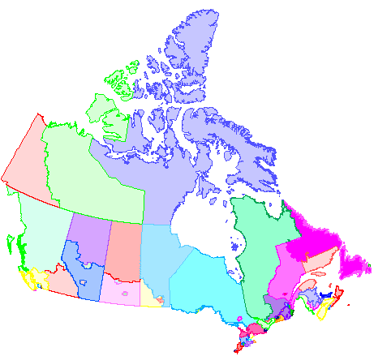
A map of Canada showing the EI regional boundaries.
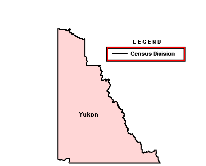
Economic Regions:
-
Province / Territory Yukon
- Canada
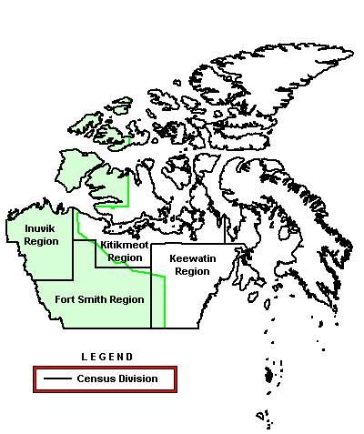
A map of the Northwest Territories showing the EI Regional boundary and
1996 Census Divisions including Fort Smith Region, Inuvik Region,
Keewatin Region and Kitikmeot Region.
Economic Regions:
-
Province / Territory Northwest Territories
- Canada
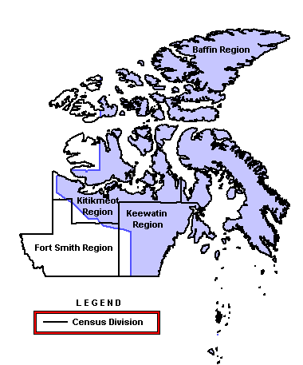
A map of Nunavut showing the EI Regional boundary and 1996 Census Divisions including
Baffin Region, Fort Smith Region, Keewatin Region and Kitikmeot Region.
Economic Regions:
-
Province / Territory Nunavut
- Canada
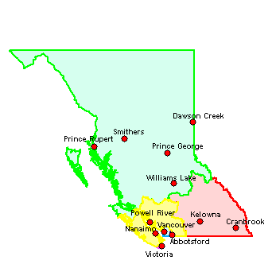
A map of British Columbia showing the EI regional boundaries and selected place names including
Abbotsford, Cranbrook, Dawson Creek, Kelowna, Nanaimo, Powell River, Prince George, Prince Rupert,
Smithers, Vancouver, Victoria and Williams Lake.
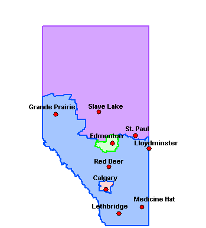
A map of Alberta showing the EI regional boundaries and selected place names including
Calgary, Edmonton, Grande Prairie, Lethbridge, Lloydminster, Medicine Hat, Red Deer,
Slave Lake and St. Paul.
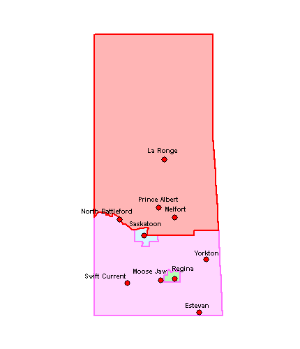
A map of Saskatchewan showing the EI regional boundaries and selected place names including
Estevan, La Ronge, Melfort, Moose Jaw, North Battleford, Prince Albert, Regina, Saskatoon,
Swift Current and Yorkton.
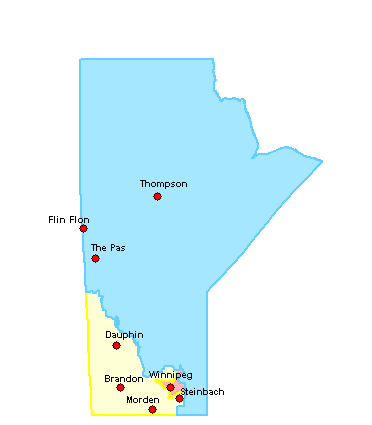
A map of Manitoba showing the EI regional boundaries and selected place names including
Brandon, Dauphin, Flin Flon, Morden, Steinbach, The Pas, Thompson and Winnipeg.
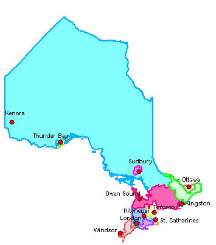
A map of Ontario showing the EI regional boundaries and selected place names.
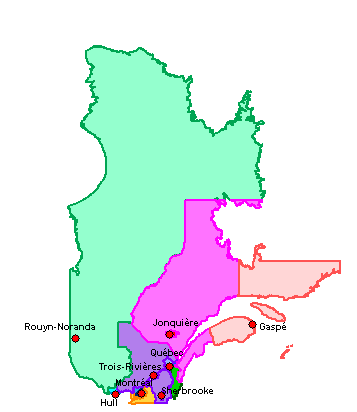
A map of Quebec showing the EI regional boundaries and selected place names including
Gaspé, Hull, Jonquière, Montréal, Québec, Rouyn-Noranda, Sherbrooke and Trois-Rivières.
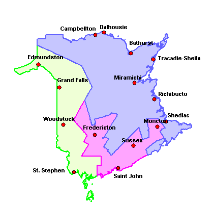
A map of New Brunswick showing the EI regional boundaries and selected place names including
Bathurst, Campbellton, Dalhousie, Edmunston, Fredericton, Grand Falls, Miramichi, Moncton,
Richibucto, Saint John, Shediac, St. Stephen, Sussex, Tracadie-Sheila and Woodstock.
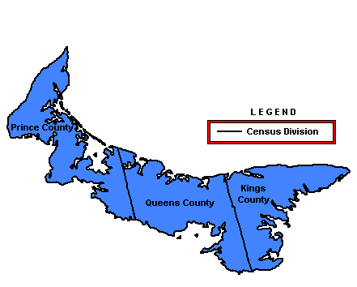
A map of Prince Edward Island showing the EI Regional boundary and 1996 Census Divisions
including Kings County, Prince County and Queens County.
Economic Regions:
-
Province / Territory Prince Edward Island
-
Canada
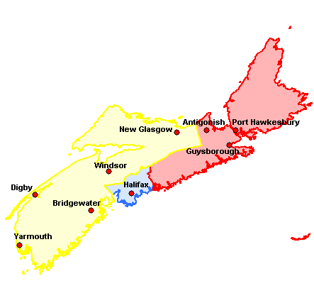
A map of Nova Scotia showing the EI regional boundaries and selected place names including
Antigonish, Bridgewater, Digby, Guysborough, Halifax, New Glasgow, Port Hawkesbury, Windsor and Yarmouth.
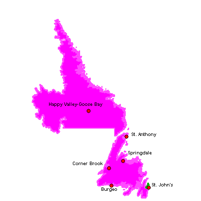
A map of Newfoundland and Labrador showing the EI regional boundaries and selected place names including
Burgeo, Corner Brook, Happy Valley-Goose Bay, Springdale, St. Anthony and St. John's.